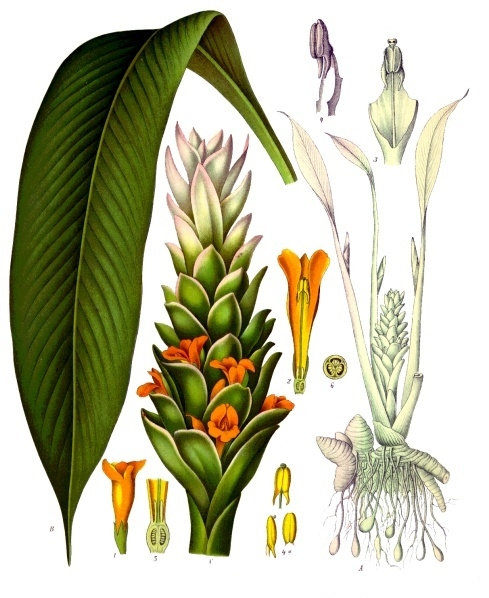

Turmeric
Turmeric (pronounced /ˈtɜːrmərɪk/, also /ˈtjuːmərɪk/[2]) is a flowering plant, Curcuma longa, of the ginger family, Zingiberaceae, the rhizomes of which are used in cooking.[3] The plant is a perennial, rhizomatous, herbaceous plant native to the Indian subcontinent and Southeast Asia that requires temperatures between 20 and 30 °C (68 and 86 °F) and a considerable amount of annual rainfall to thrive. Plants are gathered each year for their rhizomes, some for propagation in the following season and some for consumption.
The rhizomes are used fresh or boiled in water and dried, after which they are ground into a deep orange-yellow powder commonly used as a coloring and flavoring agent in many Asian cuisines, especially for curries, as well as for dyeing, characteristics imparted by the principal turmeric constituent, curcumin.[4]
Turmeric powder has a warm, bitter, black pepper-like flavor and earthy, mustard-like aroma.[5][6]
Curcumin, a bright yellow chemical produced by the turmeric plant, is approved as a food additive by the World Health Organization, European Parliament, and United States Food and Drug Administration.[4]
Although long used in Ayurvedic medicine, where it is also known as haridra,[7] there is no high-quality clinical evidence that consuming turmeric or curcumin is effective for treating any disease.[8][9]

Origin and Distribituion
The greatest diversity of Curcuma species by number alone is in India, at around 40 to 45 species. Thailand has a comparable 30 to 40 species. Other countries in tropical Asia also have numerous wild species of Curcuma. Recent studies have also shown that the taxonomy of Curcuma longa is problematic, with only the specimens from South India being identifiable as C. longa. The phylogeny, relationships, intraspecific and interspecific variation, and even identity of other species and cultivars in other parts of the world still need to be established and validated. Various species currently utilized and sold as "turmeric" in other parts of Asia have been shown to belong to several physically similar taxa, with overlapping local names.[10][11]
History
Turmeric has been used in Asia for centuries and is a major part of Ayurveda, Siddha medicine, traditional Chinese medicine, Unani,[12] and the animistic rituals of Austronesian peoples.[13][14] It was first used as a dye, and then later for its supposed properties in folk medicine.[8][9] From India, it spread to Southeast Asia along with Hinduism and Buddhism, as the yellow dye is used to color the robes of monks and priests. Turmeric has also been found in Tahiti, Hawaii and Easter Island before European contact.[15] There is linguistic and circumstantial evidence of the spread and use of turmeric by the Austronesian peoples into Oceania and Madagascar. The populations in Polynesia and Micronesia, in particular, never came into contact with India, but use turmeric widely for both food and dye. Thus independent domestication events are also likely.[13][14] Turmeric was found in Farmana, dating to between 2600 and 2200 BCE, and in a merchant's tomb in Megiddo, Israel dating from the second millennium BCE.[16] It was noted as a dye plant in the Assyrians Cuneiform medical texts from Ashurbanipal’s library at Nineveh from 7th century BCE.[15] In Medieval Europe, turmeric was called "Indian saffron."[15]
Etymology
The name possibly derives from Middle English or Early Modern English as turmeryte or tarmaret. It may be of Latin origin, terra merita ("meritorious earth").[17]
Botanical description
Appearance
Turmeric is a perennial herbaceous plant that reaches up to 1 m (3 ft 3 in) tall. Highly branched, yellow to orange, cylindrical, aromatic rhizomes are found. The leaves are alternate and arranged in two rows. They are divided into leaf sheath, petiole, and leaf blade.[18] From the leaf sheaths, a false stem is formed. The petiole is 50 to 115 cm (20–45 in) long. The simple leaf blades are usually 76 to 115 cm (30–45 in) long and rarely up to 230 cm (7 ft 7 in). They have a width of 38 to 45 cm (15 to 17+1⁄2 in) and are oblong to elliptical, narrowing at the tip.
Inflorescence, flower, and fruit
At the top of the inflorescence, stem bracts are present on which no flowers occur; these are white to green and sometimes tinged reddish-purple, and the upper ends are tapered.[19] The hermaphrodite flowers are zygomorphic and threefold. The three sepals are 0.8 to 1.2 cm (3⁄8 to 1⁄2 in) long, fused, and white, and have fluffy hairs; the three calyx teeth are unequal. The three bright-yellow petals are fused into a corolla tube up to 3 cm (1+1⁄4 in) long. The three corolla lobes have a length of 1.0 to 1.5 cm (3⁄8–5⁄8 in) and are triangular with soft-spiny upper ends. While the average corolla lobe is larger than the two lateral, only the median stamen of the inner circle is fertile. The dust bag is spurred at its base. All other stamens are converted to staminodes. The outer staminodes are shorter than the labellum. The labellum is yellowish, with a yellow ribbon in its center and it is obovate, with a length from 1.2 to 2.0 cm (1⁄2 to 3⁄4 in). Three carpels are under a constant, trilobed ovary adherent, which is sparsely hairy. The fruit capsule opens with three compartments.[20][21][22] In East Asia, the flowering time is usually in August. Terminally on the false stem is an inflorescence stem, 12 to 20 cm (4+1⁄2 to 8 in) long, containing many flowers. The bracts are light green and ovate to oblong with a blunt upper end with a length of 3 to 5 cm (1 to 2 in).